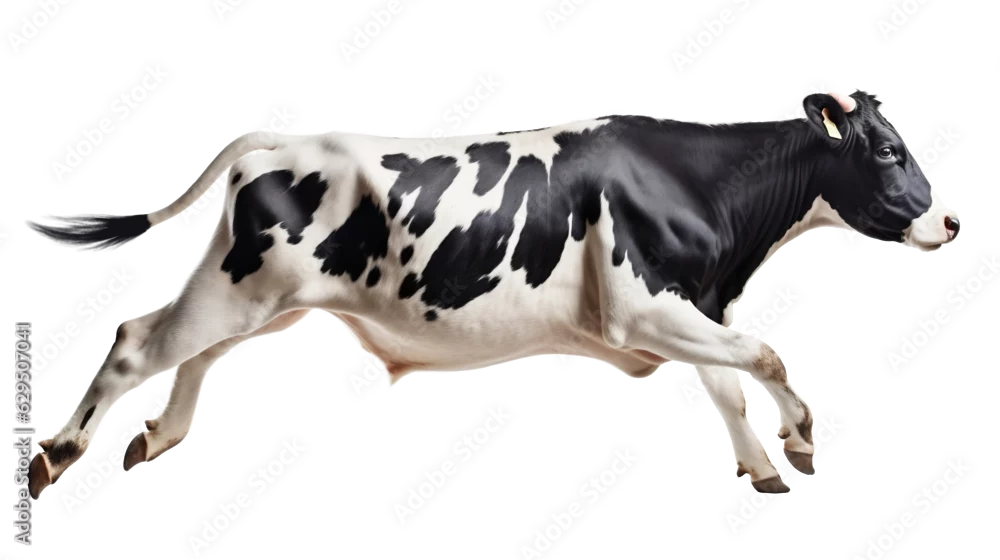

Welcome to the recommendations page. Here, you will find recommendations for starter livestock, livestock shows, and NC resources.
Though North Carolina is a big swine, turkey, and cattle producer, the best animals to start with are chicken, rabbits, and goats. They are small production animals (not much land is needed to care for them), and they can usually be kept in a backyard (except for the goats). Though care can be tricky for all animals, if you start out with a small amount and keep a watchful eye out for signs of disease, these animals are pretty easy to care for.
Homesteading Tips with LivestockLivestock shows allow buyers to see potential livestock and buy them for the next part of the process or possibly call "dibs" on the meat that the animal produces.This link will take you to the livestock shows in North Carolina.
Youth Livestock Program